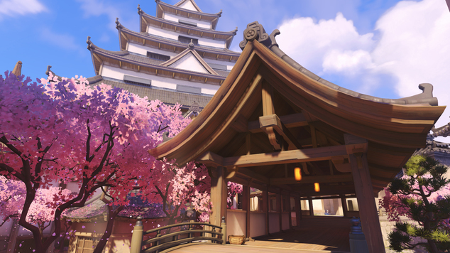
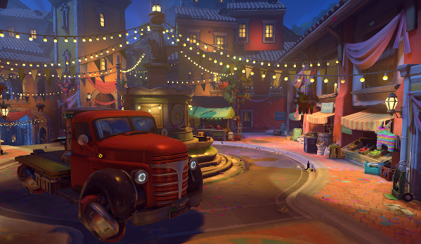
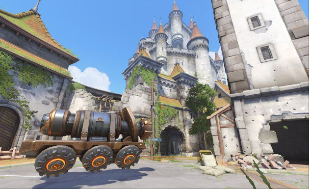
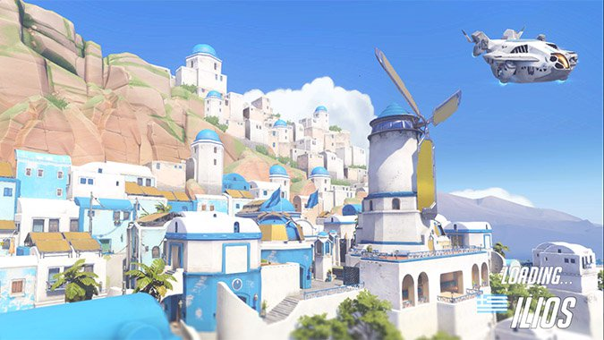

Maps
Hanamura
Hanamura is a well preserved village of unassuming shops and quiet streets, known mostly for its idyllic cherry blossom festival every spring. Hanamura is also the ancestral home of the Shimada ninja clan, which had grown over the centries to become a powerful criminal organization.(assault-other maps in this section include Temple of Anubis and Volskaya Industries)
Dorado
It is Festival de la Luz in Dorado, an annual celebration of the end of the Omnic Crisis and the period of darkness. Dorado is a city in Mexico set high above a sweeping bay(if you fall off you die). The city is powered by gigantic ziggurats, which can be seen glowing around the bay.(escort-other maps in this section include Route 66 and Watchpoint: Gibraltar)
Eichenwalde
Eichenwalde is located in the middle of the black forest, the town was a sight of one of the most famous battles during the Omnic Crisis. On this very map the leader of the crusaders, Balderich von Adler, and a handful of his best soldiers made a last stand against an advancing automaton army. They weren't enough however the german military was able to stop the Omnic Crisis. After Eichenwalde was left abandoned, and the forest has slowly begun overtaking the village. But the scars of the battles will not fade or go away.(hybrid-other maps in this section include Hollywood, King's Row, and NUmbani)
Ilios
Ilios is located in the Aegean sea of Greece, which is part of the Mediterranean Sea. Situated atop a small island rising from the Aegean Sea, Ilios is a postcard-perfect Mediterranean town, with a bustling harbor side. Great for exploring as ruins are scattered at the top of the island, where many artifacts and relics of the ancient world have been recently unearthed. (control-other maps in this section include Lijang Tower and Nepal)
